Case study · UX research and design
Finding your way through a laboratory safety plan
User research and a proposed redesign of UNC's Laboratory Safety Plan application
I used to work in UNC-Chapel Hill's Environment, Health and Safety department.
Every research lab on campus had to maintain a laboratory safety plan, documenting its hazards and safety procedures. Labs maintained their plans using our in-house web application.
But there was a problem.
The app was terrible.

A lot of my time was spent helping frustrated and confused users, not with the content of their safety plans, but with things like navigation and technical bugs.
And when I walked around campus, I routinely saw safety violations that could be traced back to our systems.
Blaming users would have been a mistake. The violations were a design problem.
And something had to be done.
That's when I became obsessed with usability.
I read books.


I took courses.
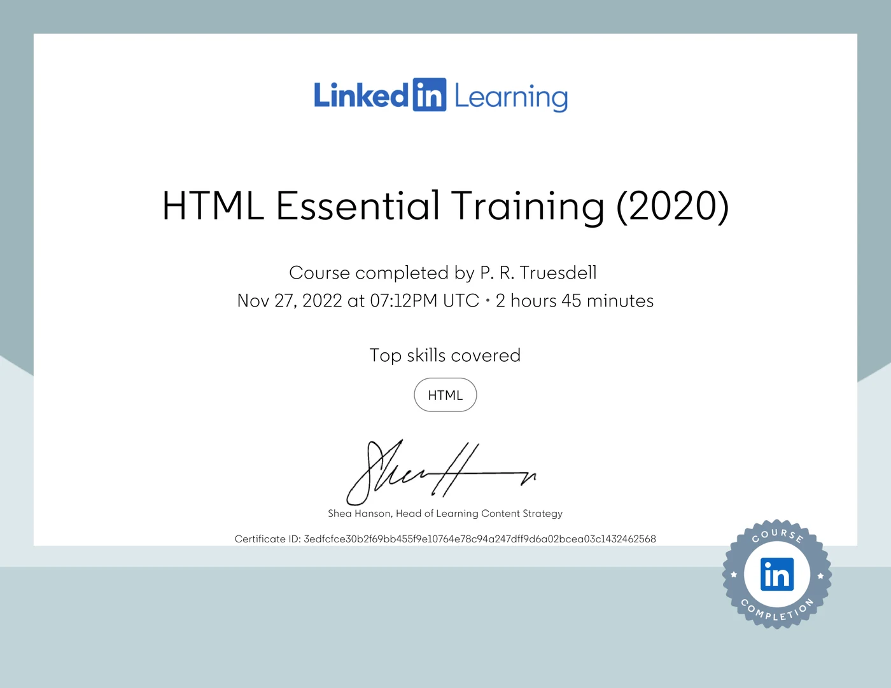


And I enrolled in Systems Analysis (INLS 582) with the primary aim to fix the EHS application.
My group started by watching real users work. We moderated think-aloud sessions, asking users to narrate their thoughts as they worked through each task.
Then we interviewed them, and distilled our findings into a list of design considerations and personas.
Dr. Anne Thompson
Clinical researcher, 15 years at UNC
“I just need to get this lab safety plan done so I can get back to my real work.”
Dr. Alex Martinez
Professor, new to UNC
“I wish this lab safety plan wasn't taking up so much of my time.”
Dr. Eva Novak
Postdoc, runs a makerspace
“There is a lot that doesn't apply to me.”
Wei Chen
Graduate student and new safety supervisor
“It's hard to keep up with so many new responsibilities.”
We also conducted a heuristic evaluation, checking every app screen against Nielsen Norman Group's ten usability heuristics.
- 1Visibility of system status
- 2Match between the system and the real world
- 3User control and freedom
- 4Consistency and standards
- 5Error prevention
- 6Recognition rather than recall
- 7Flexibility and efficiency of use
- 8Aesthetic and minimalist design
- 9Help users recognize, diagnose, and recover from errors
- 10Help and documentation
Here's what we found.
The biggest problem was navigation. Users lost track of where they were in the plan.
The navigation menu changed from page to page, and it never marked the current page.

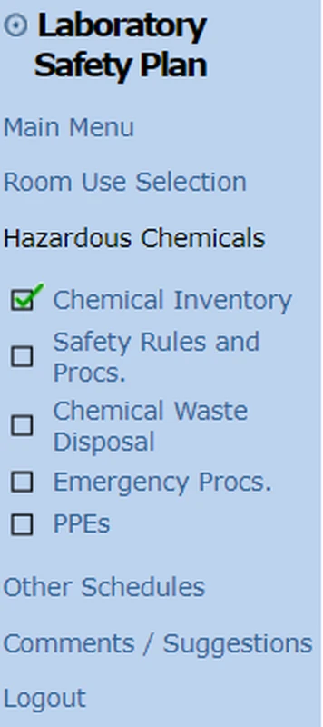
In Don't Make Me Think, Steve Krug compares navigation to street signs. It should look the same on every page, with a clear "You are here" marker.
So I designed a new nav menu that stayed the same on every page, and highlighted the current one.

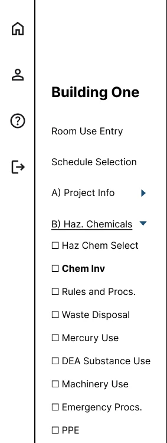
They also couldn't tell how far along they were, or when they were done.
The link to submit a finished plan was buried among other links on the main menu.

That broke Nielsen Norman Group's first heuristic, visibility of system status. A progress indicator shows users how far they've come and how much is left.
And a grey button that unlocks when you're ready is a familiar convention, with nothing new for users to learn.
So I added a progress ring for each section, and a submit button that unlocked when the plan was complete.
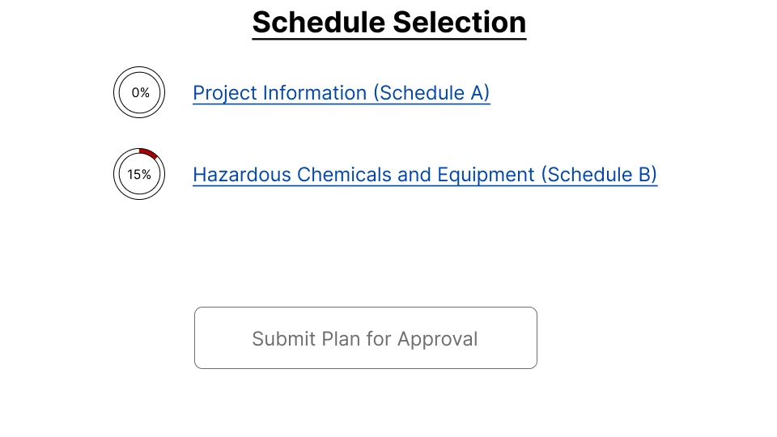
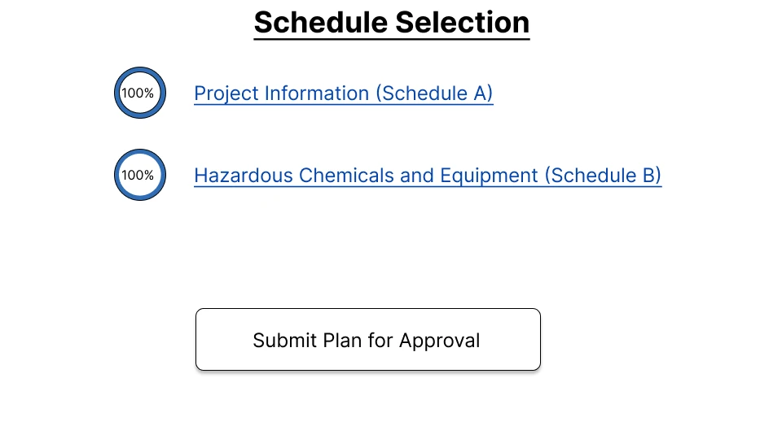
And they didn't know what to prepare.
Some requirements appeared several pages after the related task.
Users uploaded their lab's floor plan early on. Several pages later, another page asked them to mark eating and drinking areas on that plan.
By then, a user might have to go back and redo finished work.
So I put each requirement on the same page as its task.
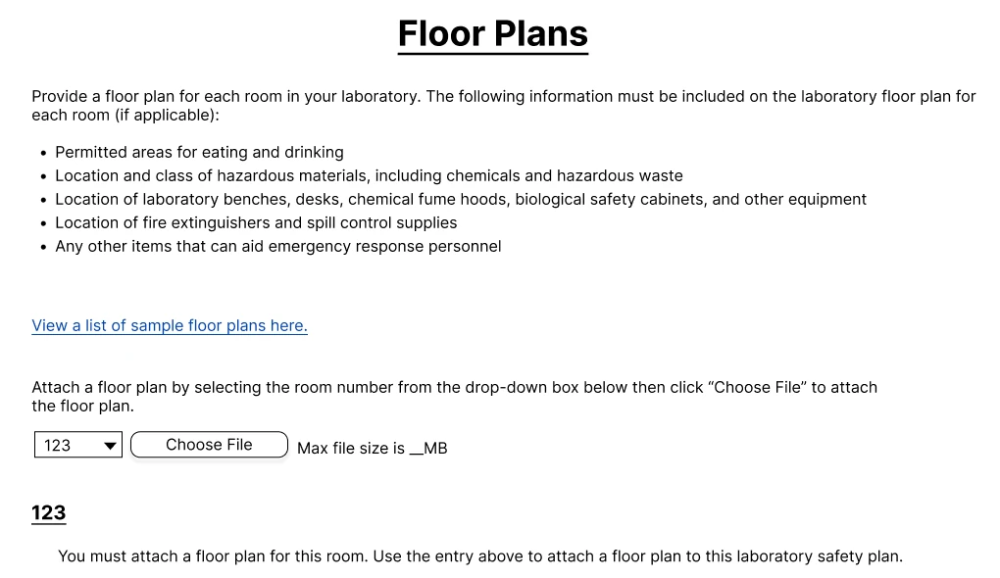
The instructions didn't help, either. Pages were packed with regulatory jargon and links that just said "here."

So I cut each page down to what users needed, and gave every link a descriptive label.

Getting lost and decoding jargon cost users time. But some problems put people at risk.
One page was simply unusable. It asked users to scroll through a list of nearly every machine imaginable, checking off each one their lab used.

When a lab missed a machine on that list, it never wrote a standard operating procedure, or SOP, for that machine.
Without an SOP, no one was trained to use the machine safely.
And people got hurt. I saw it happen.
So I replaced the checklist with a search box.
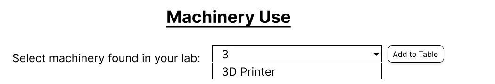
The plan also had to collect what EHS needed to keep labs safe and compliant. But the forms let it slip through.
One page asked for three required items in a single box, including the designated work area for highly toxic chemicals.
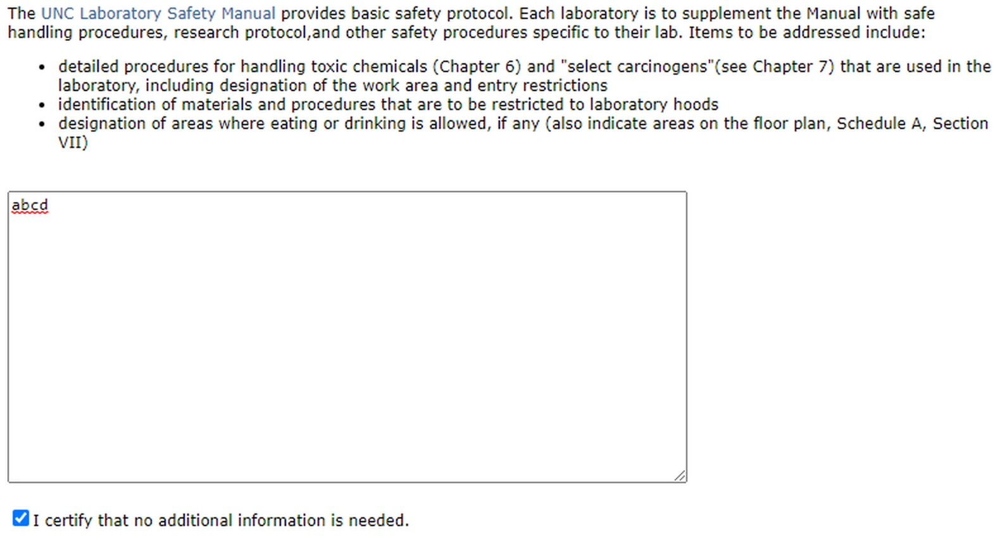
I lost count of the labs I walked into where highly toxic chemical work areas weren't signed or labeled. No one knew the signs were required.
So I gave each item its own field, with a Not Applicable option for the optional ones.
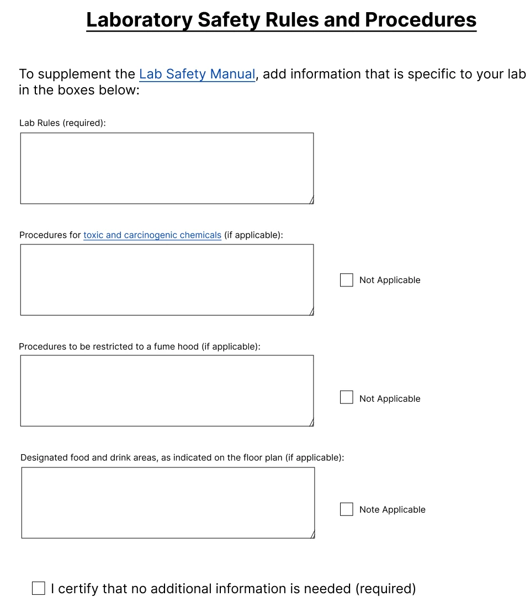
Every plan also had to say where lab workers could find key safety documents. But nothing enforced it, and nothing showed what each field expected.
Text boxes accepted anything, even nonsense.
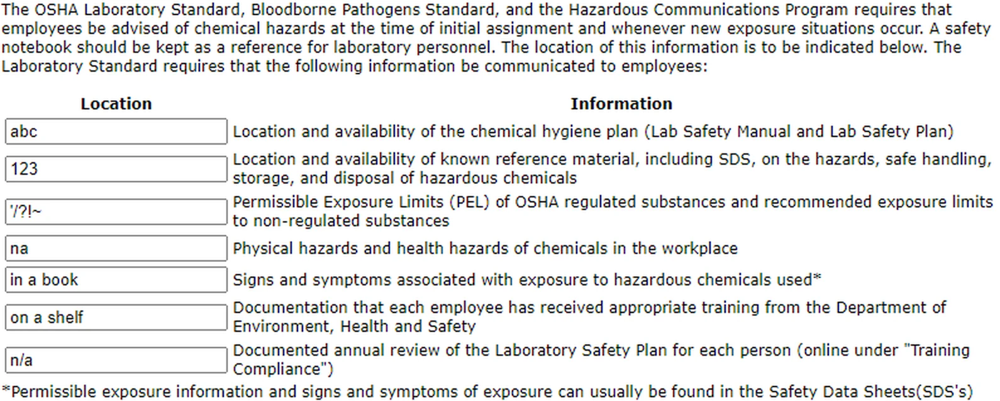
So I replaced free text with a list of valid locations.
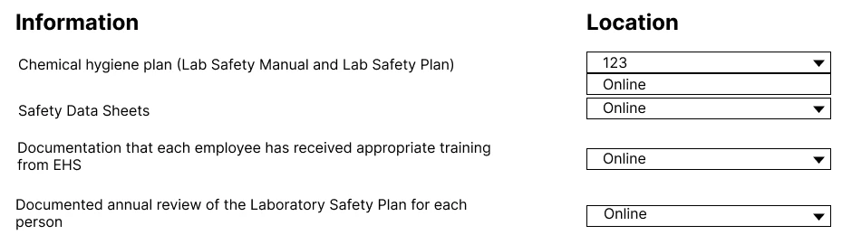
I presented our findings and my redesign to the EHS director and the IT team.
They adopted a plan to fix the most serious bugs and typos from our evaluation.
The director also named navigation as a sensible next priority.
My redesign was only partially implemented. The course ended before we could test the prototype with users, so its benefits remain unproven.
This was my first real-world UX project, a side project without a UX job title.
With the title, I would have had more confidence.
But the biggest lesson was about the organization, not the interface.
I should have planned how to communicate with IT from the start, and shared findings along the way.
Instead, I gave one big presentation at the end. Getting IT invested from the beginning would have led to better results.